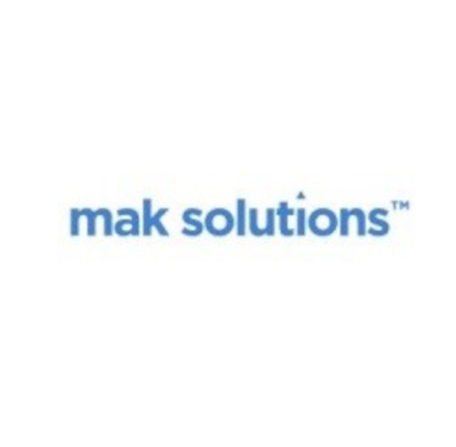

💼 Work Experience
Technical Consultant
🏛️ Nexus Groupe / Vermeg
📅 Nov 2021 – Present
🌠Tunis, Tunisia
- Engaged in 20+ hours of training in life insurance.
- Contributed to Java-based software solutions for the Policy Contract Management Administration System (Solife), including policies management, claims, cash management, fees management, and reporting.
- Translated client business needs into technical requirements for new features and enhancements.
- Conducted testing and debugging to ensure that all new features and enhancements were functioning properly.
- Contributed to an upgrade project by transferring code from an older version to a new version, while also refactoring the code.
- Contributed to Java EE-based software solutions for Asset Management firms (Megara), including portfolio management, cash management, corporate actions, and SWIFT messaging.
- Managed the delivery of Java-based financial applications to clients using SFTP, ensuring secure and reliable file delivery.
- Participated in data migration efforts, working with clients to understand their existing data structures and developing solutions to migrate their data to our system.
- Oversaw the deployment of applications, ensuring proper configuration and optimization.
- Managed the import and export of databases, ensuring secure and efficient transfer of properly formatted data.
- Collaborated with a diverse range of clients, including Société Générale Securities Services (Madrid), CDG CAPITAL (Morocco), Attijari Bank (Morocco), Bank of Africa (Morocco), and Cardif Lux Vie BNP Paribas (Luxembourg).
Full-Stack Developer
🏛️ Welume.io
📅 Aug 2021 – Apr 2024
🌠Toronto, Canada
- Designed and developed a scalable web platform from scratch using the MEVN stack.
- Built APIs following RESTful standards to allow users to submit and retrieve data from a MongoDB database.
- Translated mockup designs into high-quality, responsive user interfaces using Vanilla JS, Vue.js, React, Next.js, and Nuxt.js, ensuring the platform was accessible across all devices.
- Worked with real-time messaging and notification systems using Socket.io and Node.js.
- Automated the deployment process, reducing the time and effort required to deploy new changes.
- Participated in a pilot program with beauty businesses in Toronto, Canada, prior to launching the web platform.
Internship, Web Developer
🏛️ Innofab
📅 Feb 2021 – Jun 2021
🌠Nabeul, Tunisia
- Designed and developed a cross-platform simulation game that simulates the startups entrepreneurial ecosystem.
- Developed front-end user experience using Vanilla JS, Vue.js, HTML, Bootstrap, and Flutter SDK.
- Built scalable backend infrastructure using Node.js, Express, and MongoDB.
Internship, Mobile Developer

🏛️ Mak Solutions
📅 Jan 2020 – Mar 2020
🌠Tunis, Tunisia
- Developed and designed an employee management system for the Canadian housekeeping agency leCatpro.ca.
- Built backend APIs using PHP and MySQL.
- Created a cross-platform mobile application using jQuery Mobile, HTML, CSS, and Cordova JS.
Internship, It Support
🏛️ Société Tunisienne De L'électricité Et Du Gaz (STEG)
📅 Jan 2019 – Mar 2019
🌠Tunis, Tunisia
- Provided technical support for computer hardware and software issues, including installation, formatting, and system repairs.
- Installed and configured operating systems, software, and network devices for end-users.
- Assisted in diagnosing and resolving network connectivity issues to improve system efficiency.